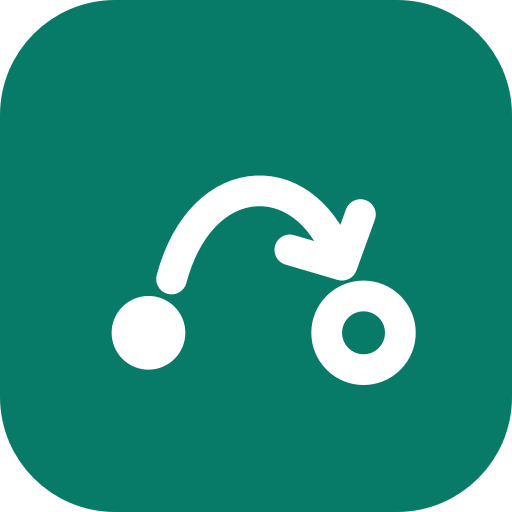

Your usual route
Pick a browser once. Links keep opening there until you choose another.

A little guidance for every link.
Your work browser. Your personal browser. That one link.
Choose where they go from the owl in your menu bar.
macOS 15+ · Apple silicon & Intel · 4.2 MB
Made for macOS 15 and later
Pick a browser once. Links keep opening there until you choose another.
Send just one link to another browser, then return to your usual choice.
Switch browsers temporarily. A countdown shows when your usual route returns.
Hold Option while opening a link to choose a browser right by your cursor.
Your browsers do the browsing. Relay routes links locally and keeps no browsing history. Update checks contact GitHub for new releases.